Georgia Moses
Jan 17th 1985 - Aug 13th 1997
Remembering Georgia Moses
(REICH) 09/29/24 - Georgia Moses was born to Ida Moses on January 7th, 1985. She had two brothers named Jermaine and Mario. She had a younger sister named Angel Greene (Turner).
Georgia's mother started dating a man named Ed Pope who moved Georgia, her mother, and her seven year old sister to the working class neighborhood of Roseland in Santa Rosa California. Prior to this, Georgia spent most of her life in Rohnert Park, California.
Growing up, Georgia attended Rohnert Park's Mountain Shadows Middle School. Friends and school officials said, in recent years, "she had emerged as a leader among her peers." Georgia was known to friends as outgoing and athletic.
Georgia was funny, smart and independent, according to those closest to her. She was the one girl everyone believed "could survive on her own," according to her then friend, Christie Broussard. She not only watched out for herself, but also mothered her 7 year old sister, Angel Greene.
On the night of August 13th 1997, in Santa Rosa California, Georgia Moses was dressed in blue jeans, a white shirt and a white nylon windbreaker. Georgia looked older than her young age of twelve. She was about 5' 4" tall, weighed 120 pounds, and had black, shoulder length hair that was commonly worn very neatly braided. On that August 13th night, she was hanging out with a friend when she received a page on her pager and called the number back. Pagers were all the rage with teens in 1997 and Georgia had one like so many other young people at the time. Sometime after Georgia phoned back the number that showed up on her pager, the friend walked her to a gas station near the intersection of Sebastopol Road and Dutton Avenue in Santa Rosa, where the friend said Georgia left with an unidentified man.
The above account is an excerpt from a 2021 news article, sourced at the end of this memorial. That being said, in earlier publications, closer to the time of her disappearance, it was reported that Georgia was last seen at 10 PM August 13th as she stood talking to a man in his 20s outside Jack in the Box restaurant, at the intersection of Sebastopol Road and Dutton Avenue in Santa Rosa.
This stranger was described as a 25 to 30 year old African American man, about 6' 4" tall and weighing 200 pounds, according to police. He had shaved or close cropped black hair and a slight mustache. He was driving a small, white four door vehicle.
On August 22nd, eight days after she disappeared, a Caltrans worker, fixing a broken guardrail, found a body in a grove of trees near the southbound on ramp to Highway 101 at Petaluma Boulevard South. The body was badly decomposed. Detectives thought it was an adult, but three days later, an anonymous caller, familiar with Georgia's family, told police that the remains could be hers. Sonoma County and Santa Rosa detectives said they didn't know whether Georgia was abducted or she had run away from home. On Friday August 29th 1997, authorities tentatively identified the body found in Petaluma as that of Georgia Moses.
The precise date of Georgia's death and place of death are unknown. The date of her death was officially listed as August 13th - the last time she was seen alive by those who knew her. The place of her death was officially listed as Petaluma California - the location where her body was found.
The family of Georgia Moses, along with friends, members of the community, law enforcement, and social workers, attended a memorial service for Georgia at noon on Friday October 24th, 1997 at Community Baptist Church (cbcsr.org) in Santa Rosa. "Many of us are hurting, frustrated, saddened, feeling guilty, wished we could have done more," the Reverend James Coffee said in his address to the more than 450 people who were in attendance to mourn the loss of young Georgia. Sadly, the family was still without their loved one's body which was being held by Sonoma County Sheriff investigators.
Georgia Moses was not laid to rest until 10 months after her death. At that time, Sonoma County Sheriff investigators explained that the body had to be tested. They said they wanted to examine every part of her, in case the killer had left some slight trace behind.
On Wednesday June 17th, 1998, the next day after her body was released by the authorities, Georgia Moses' funeral service was held at 3PM at Parent-Sorensen Mortuary, 301 South Main Street, Sebastopol, California with graveside services at Sebastopol Memorial Lawn Cemetery. The Reverend James Coffee was the officiating minister. Several businesses donated their services to the burial including Sebastopol Memorial Lawn Cemetery (plot), Parent-Sorensen Mortuary (services) and North Bay Monument (headstone). Georgia's 14 year old friend, Christie Broussard, said at her funeral, "At least now, I know where she is. Now we can take care of her." Georgia Moses was finally laid to rest at Sebastopol Memorial Lawn Cemetery in Sebastopol, Sonoma County, California.
A memorial was erected in Petaluma California in honor of Georgia Moses. San Francisco Fire Chief, Ed Ghilardi and Armando Myorga designed the steel welded angel memorial. It was originally located near the site where her body was discovered off Highway 101; however, on November 3rd 2012, the memorial was moved to Petaluma's City Hall.
Copyright 2024 All Rights Reserved
 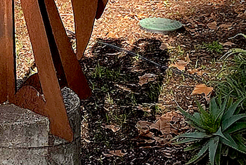
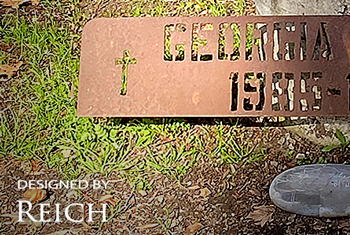
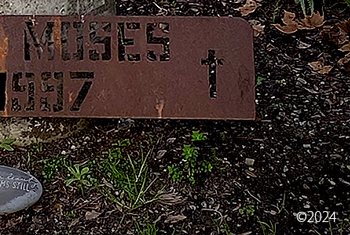
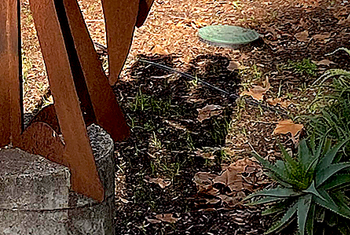
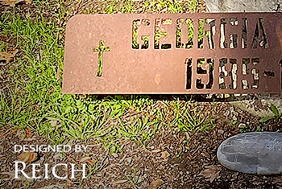
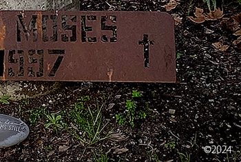
 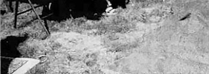
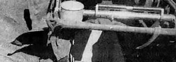
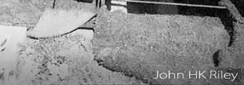
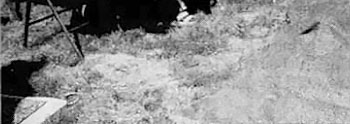
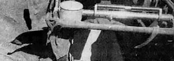
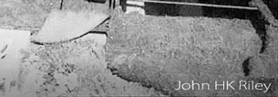
Research, Writing and Photographic Design by REICH
Special thanks to the research of JL Barnett
Sources:
Georgia Moses Memorial Site
Reichresearch.org / GeorgiaMoses
Body Found Could Be Missing Girl
SF Gate / Jim Doyle / September 16, 1997
Petaluma Body [Tentatively] Identified as Santa Rosa Girl
Press Democrat / Santa Rosa / August 30, 1997
Memorial Service for Georgia Moses
Press Democrat / Santa Rosa / October 21, 1997
Create a Village - Letter to the Editor
Press Democrat / Santa Rosa / November 5, 1997
Our Forgotten Child
Press Democrat / Santa Rosa / October 28, 1997
Funeral Planned for Santa Rosa's Georgia Moses
Press Democrat / Santa Rosa / June 17, 1998
Burial of Georgia Moses Brings Closure to Tragedy
Press Democrat / Santa Rosa / June 18, 1998
A Belated Farewell - Graveside Grief
Sonoma West Times and News / John HK Riley / Sebastopol / June, 24 1998
Statue Honors Slain 12 Year Old Girl
Petaluma Argus-Courier / Eileen Morris / Date Unknown
Murder of 12 Year Old in 1997 Still Unsolved 23 Years Later
NBC News / Andrea Cavallier / January 10, 2021